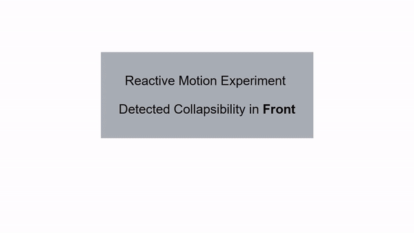
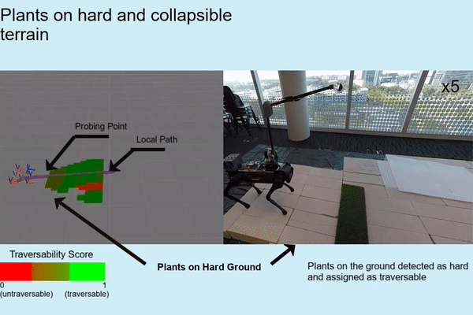
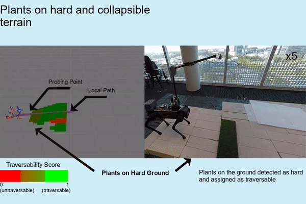
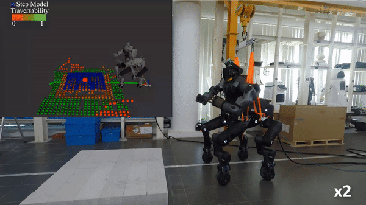
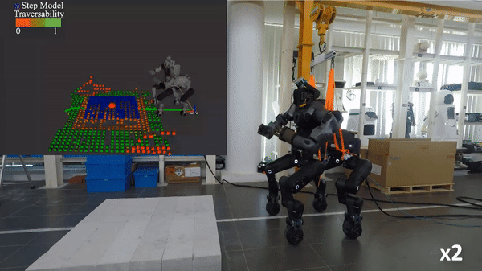
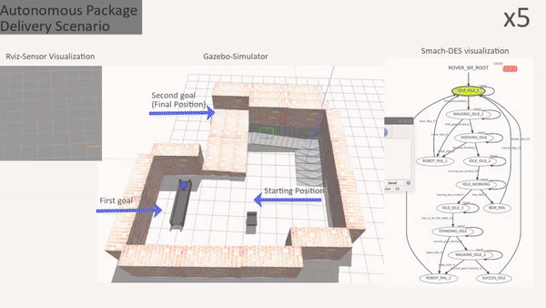
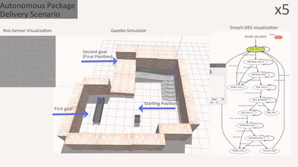
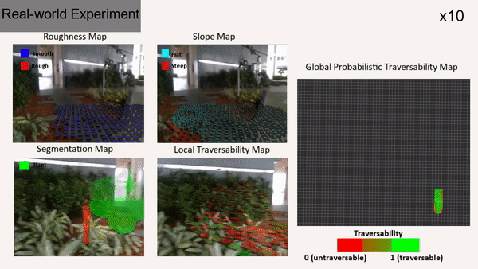
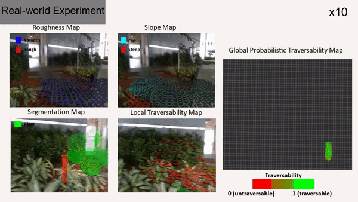

Publications & Videos
Perception and Navigation of legged Robots in Challening
EnvironmentsG. Haddeler Abstract
Abstract
PhD Thesis, Dec 2023
AbstractPhD Thesis, Dec 2023
Real-time terrain anomaly perception for safe robot locomotion
using a digital double frameworkG. Haddeler, H. P. Palanivelu, F. Colonnier, Y. C. Ng, A. H.
Adiwahono, Z. Li, C.-M. Chew, and M. Y. ChuahRobotics and Autonomous Systems, 2023
Abstract
Video
Abstract
Video
Frontiers in Robotics and AI, 2022
Traversability analysis with vision and terrain probing for safe legged robot navigationG. Haddeler, M. Y. Chuah, Y. You, J. Chan, A. H. Adiwahono, W. Y. Yau, and C.-M. ChewAbstract
Video
Traversability analysis with vision and terrain probing for safe legged robot navigationG. Haddeler, M. Y. Chuah, Y. You, J. Chan, A. H. Adiwahono, W. Y. Yau, and C.-M. ChewAbstract
Video
2022 IEEE/RSJ International Conference on Intelligent Robots
and Systems (IROS) 2022
Real-time digital double framework to predict collapsible terrains for legged robotsG. Haddeler, M. Y. Chuah, Y. You, J. Chan, A. H. Adiwahono, W. Y. Yau, and C.-M. Chew Video
Video
Abstract
Real-time digital double framework to predict collapsible terrains for legged robotsG. Haddeler, M. Y. Chuah, Y. You, J. Chan, A. H. Adiwahono, W. Y. Yau, and C.-M. Chew
VideoAbstract
2020 IEEE/RSJ International Conference on Intelligent Robots
and Systems (IROS), 2020
Explore bravely: Wheeled-legged robots traverse in unknown rough environment
G. Haddeler, J. Chan, Y. You, S. Verma, A. H. Adiwahono, and C.-M. ChewVideo
Abstract
Explore bravely: Wheeled-legged robots traverse in unknown rough environment
G. Haddeler, J. Chan, Y. You, S. Verma, A. H. Adiwahono, and C.-M. ChewVideo
Abstract
IEEE International Conference on Robotics and Automation, ser.
Workshop on Legged Robots, 2021
Discrete-Event System in Autonomous Package Delivery using Legged Robot and Conveyor Belt
G. Haddeler, Y. You, A. H. Adiwahono, and C.-M. ChewVideo
Github
Abstract
Discrete-Event System in Autonomous Package Delivery using Legged Robot and Conveyor Belt
G. Haddeler, Y. You, A. H. Adiwahono, and C.-M. ChewVideo
Github
Abstract
Journal of Intelligent and Robotic System (JINT) 2020
Evaluation of 3d lidar sensor setup for heterogeneous robot team
G. Haddeler, A. Aybakan, M. C. Akay, and H. Temeltas Video
Video
Github
Abstract
Evaluation of 3d lidar sensor setup for heterogeneous robot team
G. Haddeler, A. Aybakan, M. C. Akay, and H. Temeltas
VideoGithub
Abstract
A Confidence and Urgency-Aware Probabilistic Traversability
MappingFramework for Robot Navigation
G. Haddeler, J. Chan, Y. You, A. H. Adiwahono, and C.-M. ChewVideo
G. Haddeler, J. Chan, Y. You, A. H. Adiwahono, and C.-M. ChewVideo